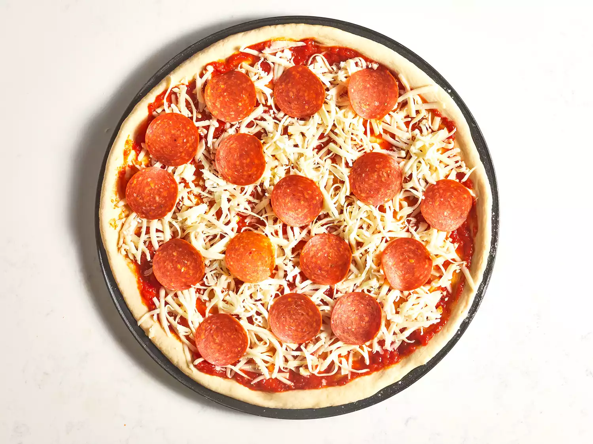

Step 1
Gather all ingredients. Preheat oven to 450 degrees F (230 degrees C), and lightly grease a pizza pan.

Step 2
Place warm water in a bowl; add yeast and sugar. Mix and let stand until creamy, about 10 minutes.

Step 3
Add flour, oil, and salt to the yeast mixture; beat until smooth. You can do this by hand or use a stand mixer fitted with a dough hook to make it easier.

Step 4
Let rest for 5 minutes.

Step 5
Turn dough out onto a lightly floured surface and pat or roll into a 12-inch circle.
Step 6
Transfer to the prepared pizza pan.

Step 7
Spread crust with sauce and toppings of your choice.
Step 8
Bake in the preheated oven until golden brown, 15 to 20 minutes. Remove from the oven and let cool for 5 minutes before serving.